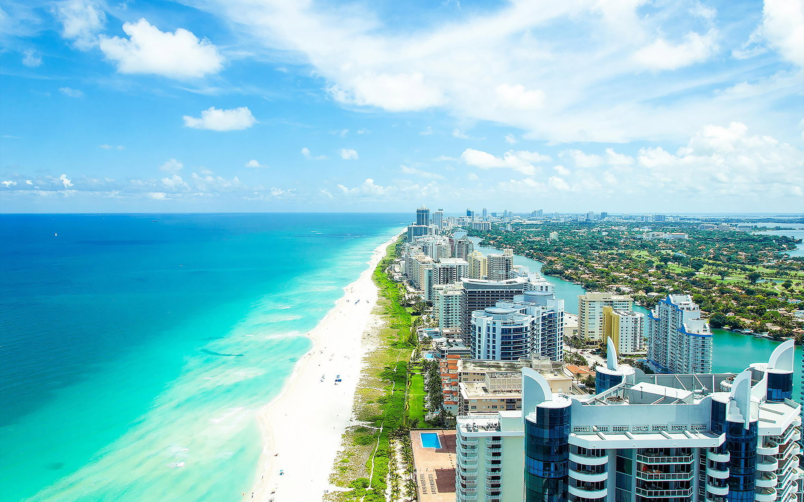
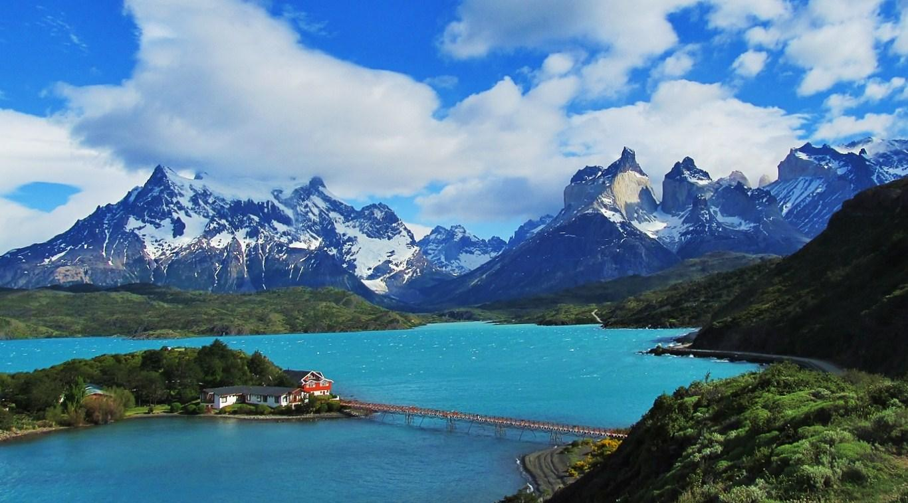
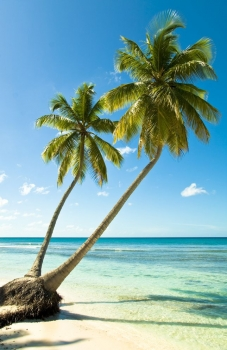
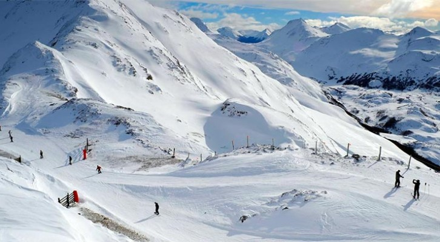

16 de febrero de 2017 Cerro Catedral - 123 comentarios

El cerro Catedral es una montaña ubicada en San Carlos de Bariloche, a 19 kilómetros del centro de la ciudad y dentro del Parque Nacional Nahuel Huapi, en Argentina. La ladera noreste de la montaña se ha desarrollado como centro de esquí de actividades de montaña, con numerosos medios de ascenso mecánicos, áreas de servicios y hoteles.
Las vistas desde este cerro son increíbles y pale la pena subir por telesilla. Excelente para visitar en cualquier eépoca del año con actividades variadas en verano e invierno. Eso sí......tienes que estar en buena forma!
3 de marzo de 2017 Villa Manzano - 245 comentarios
Villa La Angostura es una ciudad de Argentina ubicada en el departamento Los Lagos, en el sur de la provincia del Neuquén en la Patagonia. Enclavada en el sector norte del parque nacional Nahuel Huapi, rodeada de lagos, bosques y montañas, es considerada una de las localidades más bonitas de la Patagonia cordillerana, ganándose el apodo de Jardín de la Patagonia.1 2 A pocos kilómetros se encuentra el paso fronterizo con Chile, Cardenal Samoré, y junto a otras localidades cercanas, como San Carlos de Bariloche y San Martín de los Andes conforman un corredor turístico de gran popularidad tanto en la época estival como en la invernal.
Villa La Angostura, un pueblo tranquilo en el corazón de la Patagonia, es la escapada perfecta para los turistas que aman la sensación alpina que ofrecen los bosques neblinosos de las montañas. Prueba algunas cosas ricas para comer de elaboración local y artesanal mientras disfrutás del aire fresco y puro de los Andes. A los fanáticos del esquí y el snowboard les encantará Villa La Angostura en el invierno; es un verdadero país de hadas de nieve perfecta.